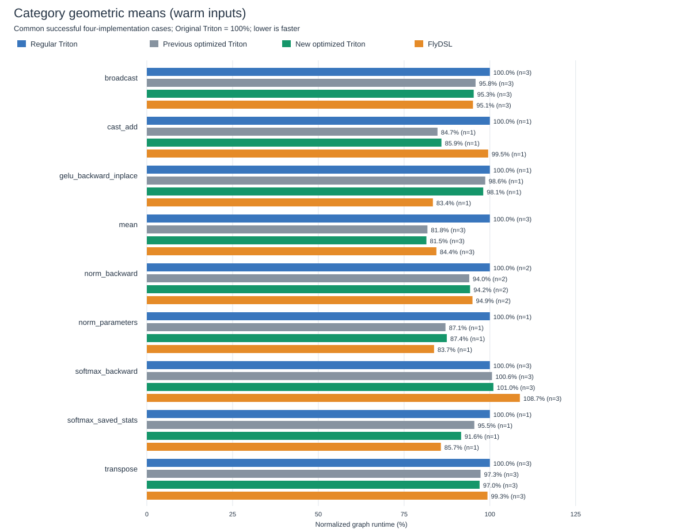

All math functions retain the existing precision policy. Lowering/layout changes and balanced cache tuning are opt-in. Four implementations are measured in rotating rounds with the same inputs: regular Triton, previous optimized Triton, new optimized Triton, and FlyDSL. Negative percentages are regressions.
These are compiled operation graphs on one MI355X, not full-model training throughput. Accuracy checks use three input seeds. Captured GPU kernel sequences and inline graph replay are reported separately; inline replay can include CPU launch gaps. A 256 MiB flush precedes each sample; warm measurements then touch input storage. Mutation restores occur before timing.
18 cases; 0 variant failures. Per-case comparisons | Per-operation summary | Raw timing CSV | Failures
| Operation | Cases | vs regular Triton | vs previous optimized Triton | vs FlyDSL |
|---|---|---|---|---|
| broadcast | 3 | 4.71% | 0.56% | -0.22% |
| cast_add | 1 | 14.12% | -1.35% | 13.70% |
| gelu_backward_inplace | 1 | 1.94% | 0.59% | -17.60% |
| mean | 3 | 18.50% | 0.37% | 3.45% |
| norm_backward | 2 | 5.78% | -0.25% | 0.75% |
| norm_parameters | 1 | 12.56% | -0.44% | -4.43% |
| softmax_backward | 3 | -1.02% | -0.41% | 7.10% |
| softmax_saved_stats | 1 | 8.38% | 4.03% | -6.89% |
| transpose | 3 | 3.00% | 0.29% | 2.32% |

Direct execution: all per-operation graphs | CUDA graph replay: all graphs